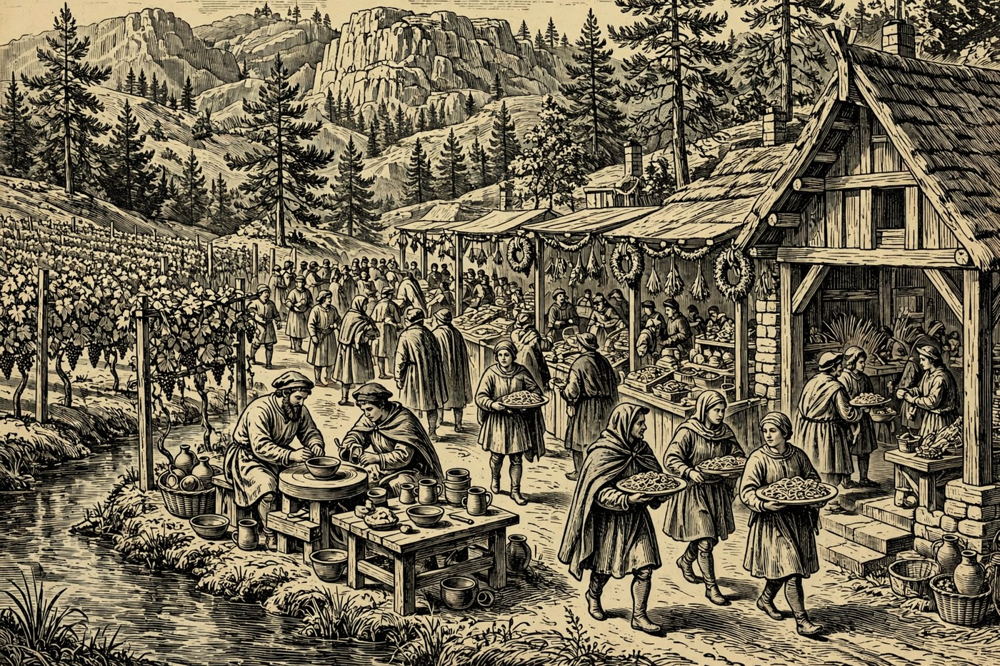

PAYSON — Hail, wayfarer, and welcome to a grey, cool Loredas at the Hearth — the clouds hang low over the Rim, the high reaches only fifty-one, and rain is more likely than not, so bring a cloak and come hungry anyway. Payson feasts tonight at the Elks Lodge’s second annual Pasta Night, treasure hunters get their last chance at the Manzanita Drive estate sale, and painters gather at Noley’s to paint their own pets. Down in Cornville the Verde Valley Pottery Festival opens its free weekend, Santa’s craft fair fills the Elks Lodge in Show Low, and Sedona dances for flood relief — and on Monday, the whole Hold turns out as shovels break ground for the new Banner Payson Cancer Center.
Happening in the Holds Today
 Payson— Estate Sale — Final Day — 703 N Manzanita Dr, Payson, today from 8:00 AM to 2:00 PM. Everything must go: beds, dressers, a couch, a dining table, Christmas decorations, wall art, camping gear, and the whole contents of a Rim Country home. Saturday is the last day, so the good pieces will walk out early. Bring cash, a truck if you can, and a hunter’s eye. This is the kind of sale that furnishes a cabin in one morning.— Sip & Paint Your Pet — Noley’s Books, Art & Whatnot, 103 AZ-260, Payson, today from 1:00 to 4:00 PM, $45. Lisa’s most popular class returns: she sketches your favorite furry friend on a 10-by-10 canvas ahead of time, and you paint the likeness in acrylics with all supplies included, plus one drink from a select Noley’s menu. Every skill level is welcome, and the class sells out fast. A portrait of your own beast, painted by your own hand — a treasure for any hall.— 2nd Annual Pasta Night — Elks Lodge, 1206 N Beeline Hwy, Payson, today at 4:00 PM. Pasta night returns to the Elks for its second year, held by the Payson Lions, who also sell tickets Saturday morning at Noley’s alongside their bake sale. Expect a hall full of neighbors and heaped plates of the good stuff. Lodge suppers in this Hold do not stay secret long, so get tickets before the plates come out. Write the Lions at paysonlionsfoundation@gmail.com if you need a hand.
Payson— Estate Sale — Final Day — 703 N Manzanita Dr, Payson, today from 8:00 AM to 2:00 PM. Everything must go: beds, dressers, a couch, a dining table, Christmas decorations, wall art, camping gear, and the whole contents of a Rim Country home. Saturday is the last day, so the good pieces will walk out early. Bring cash, a truck if you can, and a hunter’s eye. This is the kind of sale that furnishes a cabin in one morning.— Sip & Paint Your Pet — Noley’s Books, Art & Whatnot, 103 AZ-260, Payson, today from 1:00 to 4:00 PM, $45. Lisa’s most popular class returns: she sketches your favorite furry friend on a 10-by-10 canvas ahead of time, and you paint the likeness in acrylics with all supplies included, plus one drink from a select Noley’s menu. Every skill level is welcome, and the class sells out fast. A portrait of your own beast, painted by your own hand — a treasure for any hall.— 2nd Annual Pasta Night — Elks Lodge, 1206 N Beeline Hwy, Payson, today at 4:00 PM. Pasta night returns to the Elks for its second year, held by the Payson Lions, who also sell tickets Saturday morning at Noley’s alongside their bake sale. Expect a hall full of neighbors and heaped plates of the good stuff. Lodge suppers in this Hold do not stay secret long, so get tickets before the plates come out. Write the Lions at paysonlionsfoundation@gmail.com if you need a hand. Camp Verde— Verde Valley Pottery Festival — Free Weekend — D.A. Ranch Vineyards, 1900 Dancing Apache Rd, Cornville, today from 10:00 AM to 5:00 PM, admission free, and Sunday from 10:00 AM to 3:00 PM. The full festival weekend brings live pottery demonstrations, hands-on clay work for children, local food, live music, and estate-grown wine along Oak Creek. Arizona potters bring bowls, mugs, and sculpture to a hundred acres of cottonwood-shaded farmland. A handmade mug to bring home is a quest worth taking. Valley Dwellers up for the weekend pass nearly by the gate.
Camp Verde— Verde Valley Pottery Festival — Free Weekend — D.A. Ranch Vineyards, 1900 Dancing Apache Rd, Cornville, today from 10:00 AM to 5:00 PM, admission free, and Sunday from 10:00 AM to 3:00 PM. The full festival weekend brings live pottery demonstrations, hands-on clay work for children, local food, live music, and estate-grown wine along Oak Creek. Arizona potters bring bowls, mugs, and sculpture to a hundred acres of cottonwood-shaded farmland. A handmade mug to bring home is a quest worth taking. Valley Dwellers up for the weekend pass nearly by the gate. Sedona— Gabriel & Co. Holiday Trunk Show — Renee Taylor Jewelry, Tlaquepaque Arts & Shopping Village, 336 State Route 179, Sedona, today from 10:00 AM to 5:00 PM, running through Sunday, November 15. Three festive days of jewelry sparkle to open the gift season, with Gabriel & Co. experts on hand for custom designs and festive refreshments while you shop. Bring the gift list and find the piece they will treasure for years. Tlaquepaque in the fall light is half the gift already.— 3rd Annual GET LOUD Community Celebration — 3250 White Bear Rd, Sedona, today from 2:00 PM. Sedona’s community celebration returns for its third year — an afternoon of neighbors, music, and good noise in a good cause. Community celebrations are where a Hold shows its heart, and this one has earned its annual place on the calendar. Bring the family and a little volume. The red rocks will provide the echo, free of charge.— Country-Western Line Dancing for Sedona Flood Relief — Outbound Sedona, 1752 State Route 179, Sedona, today at 7:00 PM, $5 entry. Sally Gebler of Line Dance Sedona walks everyone through classic line dances step by step, so first-timers and seasoned boot-scooters alike can jump right in. Every dollar of the $5 entry goes to local neighbors recovering from the recent Sedona flooding, and more giving is welcome. Good music, good people, and a dance floor full of red rock spirit — dancing with a purpose.
Sedona— Gabriel & Co. Holiday Trunk Show — Renee Taylor Jewelry, Tlaquepaque Arts & Shopping Village, 336 State Route 179, Sedona, today from 10:00 AM to 5:00 PM, running through Sunday, November 15. Three festive days of jewelry sparkle to open the gift season, with Gabriel & Co. experts on hand for custom designs and festive refreshments while you shop. Bring the gift list and find the piece they will treasure for years. Tlaquepaque in the fall light is half the gift already.— 3rd Annual GET LOUD Community Celebration — 3250 White Bear Rd, Sedona, today from 2:00 PM. Sedona’s community celebration returns for its third year — an afternoon of neighbors, music, and good noise in a good cause. Community celebrations are where a Hold shows its heart, and this one has earned its annual place on the calendar. Bring the family and a little volume. The red rocks will provide the echo, free of charge.— Country-Western Line Dancing for Sedona Flood Relief — Outbound Sedona, 1752 State Route 179, Sedona, today at 7:00 PM, $5 entry. Sally Gebler of Line Dance Sedona walks everyone through classic line dances step by step, so first-timers and seasoned boot-scooters alike can jump right in. Every dollar of the $5 entry goes to local neighbors recovering from the recent Sedona flooding, and more giving is welcome. Good music, good people, and a dance floor full of red rock spirit — dancing with a purpose. Show Low— Santa’s Winter Wonderland Craft Fair — Elks Lodge, 805 E. Whipple St, Show Low, today from 10:00 AM to 4:00 PM. As many as 47 merchandise and craft vendors fill the lodge for the first great holiday shopping weekend on the mountain. Santa himself appears today, candy canes in hand for the children. Come start the holiday list early and support the makers of the White Mountains. A warm hall on a grey day — exactly right, by the Nine.
Show Low— Santa’s Winter Wonderland Craft Fair — Elks Lodge, 805 E. Whipple St, Show Low, today from 10:00 AM to 4:00 PM. As many as 47 merchandise and craft vendors fill the lodge for the first great holiday shopping weekend on the mountain. Santa himself appears today, candy canes in hand for the children. Come start the holiday list early and support the makers of the White Mountains. A warm hall on a grey day — exactly right, by the Nine. Prescott— Yavapai Hills 31st Annual Holiday Craft Show — 4975 Hornet Dr, Prescott, today from 9:00 AM. Thirty-one years running, this beloved craft show fills the hall with handmade gifts, holiday decorations, and the work of local makers to open the season. Arizona’s Christmas City knows how to start Christmas early, and this show is one of its oldest traditions. Go in the morning for the full tables. Bring the gift list and a little patience for the happy crowd.
Prescott— Yavapai Hills 31st Annual Holiday Craft Show — 4975 Hornet Dr, Prescott, today from 9:00 AM. Thirty-one years running, this beloved craft show fills the hall with handmade gifts, holiday decorations, and the work of local makers to open the season. Arizona’s Christmas City knows how to start Christmas early, and this show is one of its oldest traditions. Go in the morning for the full tables. Bring the gift list and a little patience for the happy crowd.
The Days Ahead
- Sun, Nov. 15— Alice Cooper in Concert — Findlay Toyota Center, Prescott Valley, Sunday at 7:00 PM. The godfather of shock rock brings his show to Prescott Valley, a short drive from downtown Prescott. It is the loudest booking of the week by a considerable margin, and Rim Country rock fans will fill the arena. A bard of a very different school, to be sure — but every mead hall honors a legend. Get tickets ahead; this one will not wait at the door.— Verde Valley Pottery Festival — Final Day — D.A. Ranch Vineyards, Cornville, Sunday from 10:00 AM to 3:00 PM, admission free. The festival’s last day is the quiet one: demonstrations, hands-on clay for children, food, music, and wine along Oak Creek, with the potters’ tables still full. If Saturday’s crowds kept you home, Sunday is your hour. A handmade bowl travels home better than any souvenir. Go early, for the best pieces go first.
- Mon, Nov. 16— Banner Payson Cancer Center Groundbreaking — 807 S Ponderosa St, Payson, Monday at 10:00 AM, on the south side of the main building. Shovels turn for the new Banner Payson Cancer Center — changing the landscape of cancer treatment in Payson, one shovel at a time, as the hosts put it. For Rim Country families, care closer to home means fewer long drives down the Beeline at the hardest times. Come stand with the town for a hopeful morning. This is the week’s biggest good news, and it is ours.
- Tue, Nov. 17— The Dreamboats — 301 S McLane, Payson, Tuesday at 7:00 PM. The Dreamboats bring a revival of the golden age of rock and roll — Elvis, Chuck Berry, the Beatles, Buddy Holly — played with heartthrob shine that has audiences falling in love with the old tunes all over again. It is a school night, yes, but some music is worth the yawns tomorrow. Bring someone who remembers when these songs were new. The hall will be humming by the second chorus.— Festival of Trees — A Christmas City Gala — Sam Hill Warehouse, 232 N Granite St, Prescott, opening Tuesday at 5:30 PM, tickets $100 for the gala. The gala opens Festival of Trees week in Arizona’s Christmas City: decorated trees and wreaths, Santa, and vendors under one roof, with proceeds benefiting the Eric Marsh Foundation. The public festival follows Thursday through Saturday, November 19–21, from 10:00 AM to 8:00 PM at $10 for adults. Go early in the run for the full forest. Prescott wears this season better than any town in the Holds.
- Wed, Nov. 18— Rim Country Camera Club Meeting and Rally Around the Flag Dedication — Payson Library Large Meeting Room, 328 N McLane Rd, Payson, Wednesday from 4:30 to 6:30 PM. The camera club gathers to share the month’s work and its calendar contest pictures. The same morning at 10:00 AM, the Rally Around the Flag memorial is dedicated at its complex, flags raised in ceremony. Two gatherings, one theme: this town remembers, and it keeps the pictures to prove it. Guests with an eye for Rim Country light are welcome at the club.
- Thu, Nov. 19— Festival of Trees Prescott — Sam Hill Warehouse, 232 N Granite St, Prescott, Thursday through Saturday, November 21, from 10:00 AM to 8:00 PM, adults $10 and kids $2. Decorated trees and wreaths to see, shop, and vote on, with live entertainment, hot cocoa, ornament-making for children, and visits with Santa. Net proceeds benefit the Eric Marsh Foundation, honoring the Granite Mountain Hotshots. It is the first great hall of the Christmas season — go in the daytime with the family. By the Nine, bring cocoa money.
- Fri, Nov. 20— Charcuterie Make ’n Take — Holiday Season Edition — 501 W Frontier St, Payson, Friday from 6:00 to 8:00 PM. A hands-on class in building Thanksgiving and Christmas charcuterie boards that will impress any hall: meats, cheeses, fruits, and treats arranged into eye-catching designs, with tips for beginners and old hands alike. All supplies and instruction are included, plus a handmade board to take home, and $5 of each registration goes to St. Mary’s Food Bank. Register online or in the studio through Yoga in the Pines, and bring whatever you like to drink while you create.— Salty Corner — Dry Bar Comedy — 200 W Frontier, Payson, Friday at 7:00 PM, free tickets. Salty Corner Comedy closes its 2026 season with its last show of the year — big laughs, great company, and a hall full of neighbors ending the year right. Tickets are free and land soon, so follow the Salty Corner page to know when and where to get yours. Bring your friends, bring your family. A mead hall that laughs together, stays together.